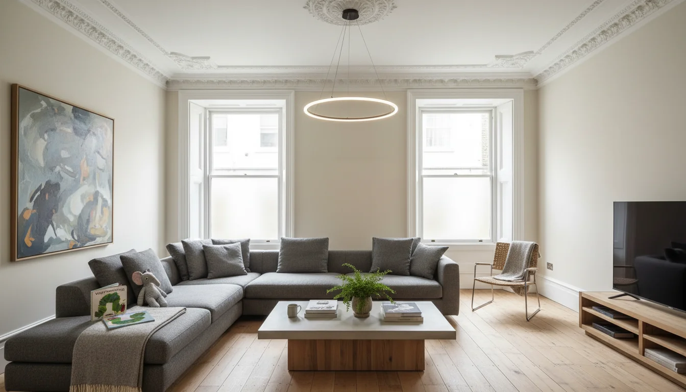
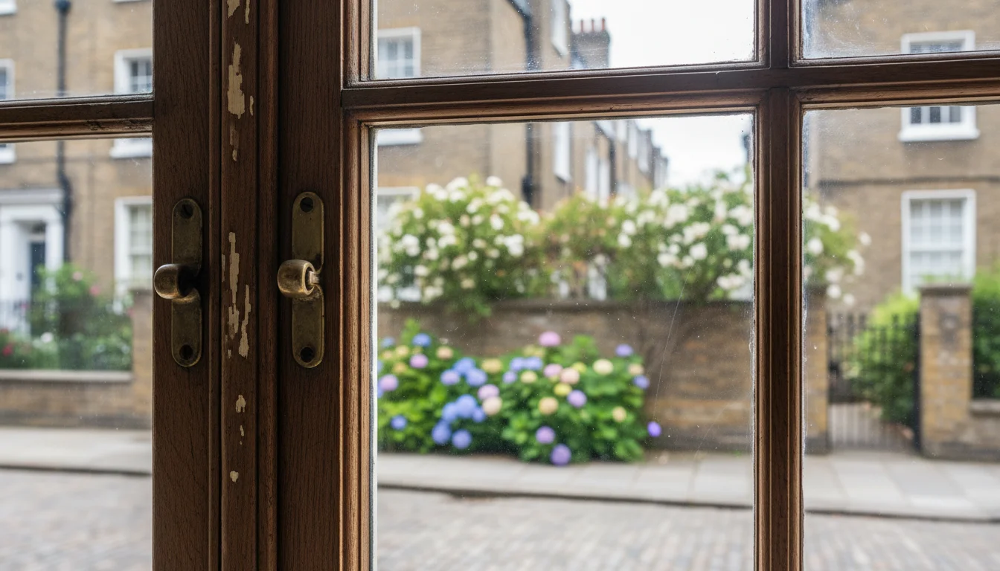
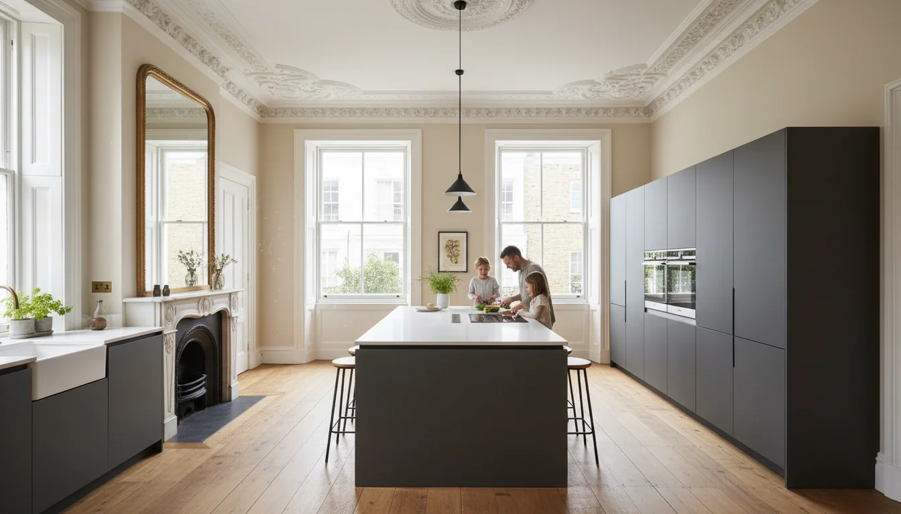

מבנה רשום בלונדון - מתי אסור לגעת בכלום
מה זה בכלל listed building
קניתם בית ויקטוריאני יפהפה ב- Hampstead. שילמתם עליו מחיר שלא כדאי לדבר עליו. עכשיו אתם רוצים לפתוח את המטבח, להוסיף חדר אמבטיה, להחליף חלונות. הפתעה: יכול להיות שאסור לכם.
ב- listed building - מבנה רשום בלונדון - המדינה מחליטה מה מותר ומה אסור לעשות בנכס שלכם. לא משנה שזה שלכם. לא משנה שהורדתם עליו שני מיליון פאונד. יש מבנים שהממשלה החליטה שהם חשובים מבחינה אדריכלית או היסטורית, ולכן הם מוגנים. זה לא בקשה. זה חוק.
הבריטים מתייחסים למבנים היסטוריים כמו אל מורשת לאומית. לא משנה מי הבעלים - המבנה שייך גם להיסטוריה. בישראל יש חוקי שימור על הנייר, אבל האכיפה חלשה בהרבה: מבנים לשימור נהרסים "בטעות" אצל קבלנים, הקנסות בפועל לרוב סמליים, ובירושלים מבקר המדינה קבע שהעירייה לא השלימה את רשימת המבנים לשימור במשך יותר מ-20 שנה. פה זה לא עובד ככה. ויש גוף שנקרא Historic England שמנהל את הרשימה הארצית של כל המבנים המוגנים, ועוקב אחרי מה שקורה איתם.
באנגליה יש כ-500,000 מבנים רשומים. לונדון לבד מכילה יותר מ-5% מהם. ויש שלוש רמות:
| רמה | אחוז מהמבנים הרשומים | מה זה אומר |
|---|---|---|
| Grade II | כ-92% | מבנים בעלי עניין מיוחד. יש הגבלות, אבל יש גמישות. רוב הבתים הויקטוריאניים והג'ורג'יאניים |
| Grade II* | כ-6% | חשובים במיוחד. פיקוח צמוד, Historic England מתערבים ישירות בתהליך האישור |
| Grade I | 2% בלבד | מבנים יוצאי דופן - ארמונות, כנסיות, משמעות לאומית. כל שינוי עובר בדיקה קפדנית |
דבר שחשוב להבין: כשמבנה הוא listed, הוא listed בשלמותו. לא רק החזית, לא רק הגג. גם מה שבפנים, גם החצר, גם המבנים הנלווים. אם יש מחסן אבן בגינה שנבנה באותה תקופה - גם הוא מוגן.
מה אסור לעשות - ומה כן אפשר

רוצים לשנות משהו שנוגע לאופי של הבניין? צריך אישור מיוחד שנקרא listed building consent. בלעדיו, אסור לגעת.
מה נחשב "שינוי שמשפיע"? כמעט הכל:
- החלפת חלונות או דלתות - גם אם הישנים נרקבים
- הזזת קירות פנימיים או הריסתם
- שינוי חיפוי הגג
- פתיחה או הגדלה של פתחים
- החלפה או פתיחה של אחים
- הרחבות ותוספות בנייה
- התקנת מערכות חדשות שדורשות חציבה בקירות
שימו לב: זה כולל גם עבודות פנים. ישראלים רגילים לחשוב שמה שקורה בתוך הדירה זה עניין שלהם. ב-listed building, גם קיר פנימי מקורי הוא חלק מהמורשת.
אבל - וזה חשוב - זה לא "לא" אוטומטי. כ-90% מבקשות ה-consent מאושרות. המערכת לא נועדה לחסום שיפוצים. היא נועדה לוודא שהם נעשים נכון. השאלה היא לא "אם" אלא "איך."
ב- Grade II, תחזוקה שוטפת עם חומרים זהים - like-for-like - בדרך כלל לא דורשת אישור. תיקון חלון אגוז במקום להחליף אותו? בסדר. שיפוץ טיח מקורי באותה טכניקה? בסדר. החלפה בחלון אלומיניום חדש? צריך אישור. הכלל הוא פשוט: אם אתם מחזירים את הדבר למצב המקורי שלו עם אותם חומרים, זה בדרך כלל בסדר. אם אתם משנים משהו - צריך לבקש.
ב- Grade I ההגבלות מחמירות. שם גם שינויים שנראים קטנים - כמו סוג הצבע על הקירות או צורת הידית על דלת - יכולים לדרוש התייחסות.
הנקודה שמשפחות ישראליות צריכות להבין: אם קניתם בית ויקטוריאני גדול כי רציתם חמישה חדרי שינה ומטבח שעובד למשפחה - אפשר לעשות את זה. הילדים צריכים חדרים משלהם, המטבח צריך לעבוד כשכולם שם בחופש הגדול. זה אפשרי. אבל צריך לתכנן נכון, לעבוד עם אנשי מקצוע שמכירים את המערכת, ולהגיש בקשות כמו שצריך. זה לא "אסור". זה "צריך אישור."
Listed building consent - התהליך

התהליך עצמו לא כזה מפחיד כמו שהוא נשמע. בואו נפרק אותו.
- שיחת ייעוץ. לפני שמגישים בקשה רשמית, מדברים עם ה-Conservation Officer של הרשות המקומית. זה בחינם ולא מחייב. הוא יגיד לכם מה סביר, מה לא ריאלי, ומה הסיכויים של מה שאתם רוצים לעשות. ה-Conservation Officer הוא לא אויב. הוא האיש שיגיד לכם מראש אם אתם הולכים לבזבז זמן על בקשה שלא תעבור. תשתמשו בו.
- הגשת בקשה. אין אגרה על listed building consent. זה חינם, בניגוד ל-planning permission שעולה כסף. צריך להגיש תוכניות, הסברים, ולפעמים דוח heritage impact assessment שמראה איך השינויים שלכם ישפיעו על המבנה. הבקשה צריכה להסביר שני דברים: למה השינויים נחוצים, ולמה הם לא פוגעים באופי של המבנה.
- המתנה. בדרך כלל שמונה שבועות. אבל במקרים מורכבים - במיוחד ב- Grade I או Grade II* שבהם Historic England מעורבים - זה יכול לקחת שלושה-ארבעה חודשים. לפעמים יותר. תתכננו בהתאם.
- תנאים. גם כשהבקשה מאושרת, היא מגיעה עם תנאים. סוג חומרים, שיטות עבודה, לפעמים דרישה לתיעוד ארכיאולוגי של מה שהיה לפני השינוי. צריך לעמוד בתנאים, לא רק באישור.
מי שמנהל שיפוץ בלונדון מישראל צריך לדעת שזה מוסיף שבועות, ולפעמים חודשים, ללוח הזמנים הכולל. כשעובדים מרחוק, צריך מישהו על הקרקע שמנהל את הקשר מול הרשויות, שיודע לדבר עם ה-Conservation Officer, ושמוודא שהקבלן עובד לפי התנאים. זה לא משהו שעושים לבד מ- Tel Aviv. זה בדיוק המקום שבו מישהי שמכירה את המערכת מבפנים חוסכת לכם חודשים של ניסוי וטעייה.
Conservation area - זה לא אותו דבר
אנשים מבלבלים בין listed building ל-conservation area, ואלה שני דברים שונים. חשוב להבין את ההבדל כי הוא משפיע על מה שתצטרכו לעשות.
| מאפיין | Listed building | Conservation area |
|---|---|---|
| מה מוגן | מבנה ספציפי - פנים, חוץ, מבנים נלווים | אזור שלם - האופי הכללי של השכונה |
| הגבלות פנים | כן - גם שינויים שאף אחד לא רואה מבחוץ | לא - מה שקורה בפנים בדרך כלל לא מעניין אותם |
| הגבלות חוץ | כן - הכל | כן - חלונות, גדרות, גגות, צבע חיצוני, עצים |
| אישור נדרש | Listed building consent | Planning permission רגיל (עם תשומת לב מוגברת) |
ועכשיו החלק שכדאי לשים לב אליו: יש מצב שהנכס שלכם נמצא גם ב-conservation area וגם הוא listed. במקרה כזה, אתם כפופים לשתי מערכות הגבלות - גם על מה שרואים מבחוץ וגם על מה שקורה בפנים. האזורים שישראלים קונים בהם - Hampstead Garden Suburb, למשל, שם כמעט כל בית הוא גם ב-conservation area וגם בפיקוח של ה-Hampstead Garden Suburb Trust - הם בדיוק המקומות שבהם זה קורה. גם Belsize Park, גם Primrose Hill, גם חלקים גדולים מ- Chelsea. אם השכונה יפה, עתיקה, ומטופחת - כנראה שיש סיבה לזה.
מה קורה אם עושים בלי אישור
זה המקום להיות ישירים. ביצוע עבודות ב-listed building בלי consent הוא עבירה פלילית. לא מנהלית. לא קנס טכני. פלילית.
העונש בבית משפט שלום: קנס עד 20,000 פאונד או עד שישה חודשי מאסר. בבית משפט מחוזי: קנס ללא הגבלה ועד שנתיים מאסר. וכשבית המשפט קובע את גובה הקנס, הוא לוקח בחשבון את הרווח הכספי שצמח מהעבירה. שיפצתם בלי אישור והעליתם את ערך הנכס? הקנס יהיה בהתאם.
הרשות יכולה להוציא listed building enforcement notice שדורש שכל עבודה שנעשתה בלי אישור תוחזר למצב הקודם. על חשבון הבעלים, כמובן. ואי-ציות לצו כזה היא עבירה נפרדת בפני עצמה.
המסר הוא פשוט: אל תנסו לעקוף את המערכת. גם אם זה מרגיש מוגזם, גם אם בישראל זה היה עובד אחרת - פה זה עובד ככה. עדיף לחכות שמונה שבועות ל-consent מאשר לסכן עבירה פלילית.
איך עובדים בתוך המגבלות
אז מה עושים? לא נבהלים. מתכננים. יש דרך לעשות את זה נכון, ומי שעובד עם אנשים שמכירים את המערכת - מקבל תוצאות.
עובדים עם אנשי מקצוע שמכירים listed buildings. לא כל אדריכל ולא כל קבלן יודע לעבוד על מבנים רשומים. זה תחום מומחיות. צריך מישהו שעשה את זה, שמכיר את ה-Conservation Officers, שיודע איך לנסח בקשת consent שתעבור. אדריכל שמתמחה ב-heritage work ידע לצפות בעיות מראש ולהציע פתרונות שהרשויות יקבלו.
משתמשים בחומרים מתאימים. חלק מהמשחק הוא להראות לרשויות שאתם מכבדים את המבנה. טיח סיד במקום גבס מודרני. חלונות עץ במקום אלומיניום. לא תמיד יותר יקר, אבל תמיד דורש ידע. יש בעלי מלאכה שמתמחים בדיוק בזה - restoration specialists - וכדאי להשתמש בהם.
מוצאים פתרונות יצירתיים. הגבלות מכריחות אותך לחשוב אחרת. ודווקא מתוך זה יוצאים פתרונות עיצוביים שלא היית מגיע אליהם אחרת. לא מרשים להזיז קיר? אולי אפשר ליצור תחושת מרחב בדרך אחרת. לא מרשים חלונות חדשים? אפשר לשפר את האור הקיים עם פתרונות פנימיים.
מתחילים את התהליך מוקדם. אל תשאירו את ה-consent לדקה האחרונה. תגישו הרבה לפני שהקבלן מתחיל, לא אחרי. שמונה שבועות ממתנה - ולפעמים הרבה יותר - זה דבר שאפשר לתכנן סביבו, אם יודעים מראש. תתחילו את תהליך האישורים עוד לפני שסגרתם עם קבלן.
לא חוסכים על ה-heritage impact assessment. אם הפרויקט גדול, שווה להשקיע בדוח מקצועי שמראה שהבנתם את הערך ההיסטורי של המבנה ושאתם עובדים לפי הכללים. זה מה שמשכנע את הרשות לאשר.
הפנטהאוז ב- St John's Wood - דוגמה מהשטח

בואו נדבר על מקרה אמיתי. שיפצתי פנטהאוז של 220 מ"ר ב- St John's Wood High Street, בתוך מבנה Grade I - הרמה הכי גבוהה של הגנה. הנכס צופה על ריג׳נטס פארק, עם כל היופי שזה כולל ועם כל ההגבלות שמגיעות עם זה.
עשינו שיפוץ מלא: מטבח חדש, ארבעה חדרי אמבטיה, ארונות איטלקיים מותאמים אישית, שניים מהם walk-in. ארבעה חדרי שינה, שניים עם en-suite - דירה שצריכה לעבוד למשפחה. הרצפה המקורית - עץ - עברה ליטוש וצביעה בגוון בהיר יותר כדי להכניס יותר אור. כי את הרצפה המקורית לא מחליפים. משפרים.
האתגר הגדול היה מיזוג אוויר. ב-Grade I לא מרשים יחידות חיצוניות על הבניין. אי אפשר לשים מזגן ספליט על קיר חיצוני של מבנה בן מאתיים שנה. בלונדון, מיזוג הוא לא מותרות - זה נחוץ, במיוחד כשמשפחה עם ילדים מגיעה באוגוסט ובדירה אין מרפסת פתוחה. הפתרון: מערכת פנימית שקטה שלא דורשת שום אלמנט חיצוני. זה דרש תכנון, יצירתיות, ועבודה עם יועצים שמכירים את המערכת. אבל זה עובד.
התוצאה: דירה מודרנית, מלאת אור, עם נוף לפארק - שמכבדת את ההיסטוריה של המבנה בלי להרגיש כמו מוזיאון. אורחים שמגיעים לא תמיד מבינים שזה Grade I. וזו בדיוק הנקודה. שיפוץ טוב ב-listed building לא נראה כמו פשרה. הוא נראה כמו בית.
זה בדיוק הקטע. listed building לא אומר שאי אפשר ליצור בית מודרני ונוח. זה אומר שצריך לדעת איך.
מי שרוצה מישהי שמבינה את שני הצדדים - את המערכת הבריטית ואת מה שמשפחה ישראלית צריכה מבית בלונדון - זה מה שאני עושה.
- Listed building הוא מבנה שהממשלה הבריטית מגנה עליו - פנים, חוץ, מבנים נלווים. שלוש רמות: Grade II (92%), Grade II* (6%), Grade I (2%).
- כדי לשנות משהו צריך listed building consent - תהליך נפרד מ-planning permission, בחינם, שמונה שבועות. כ-90% מהבקשות מאושרות.
- עבודה בלי אישור היא עבירה פלילית ללא התיישנות. קנסות ללא הגבלה ועד שנתיים מאסר.
- Conservation area מגביל בעיקר מבחוץ. Listed building מגביל גם בפנים. נכס יכול להיות שניהם בו-זמנית.
- אפשר לשפץ listed building ולהפוך אותו לבית מודרני ונוח - עם אנשי מקצוע שמכירים את המערכת, חומרים מתאימים, ותכנון מוקדם.